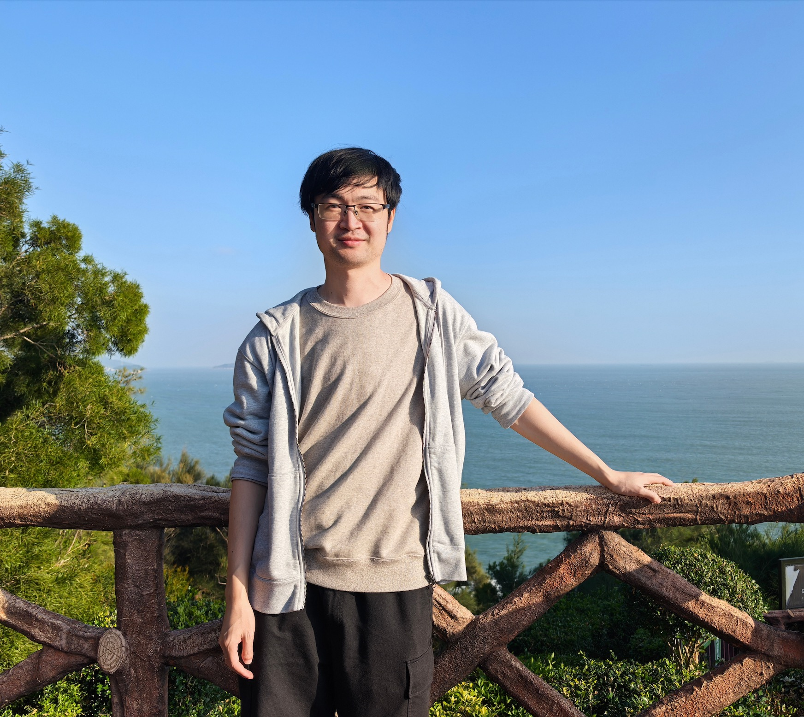
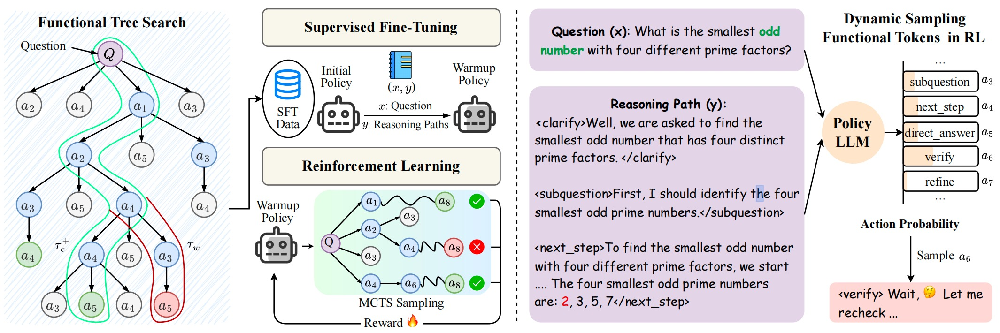
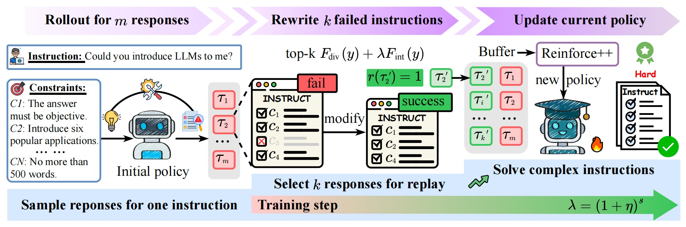
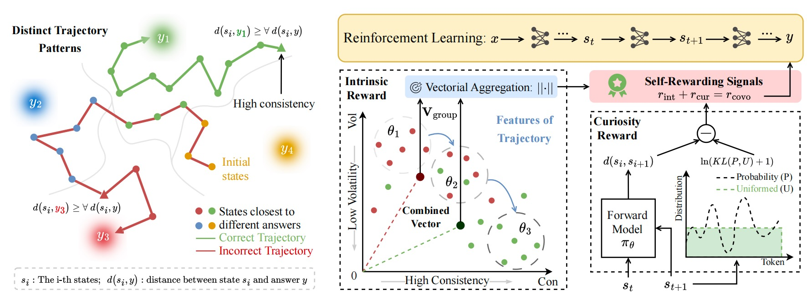
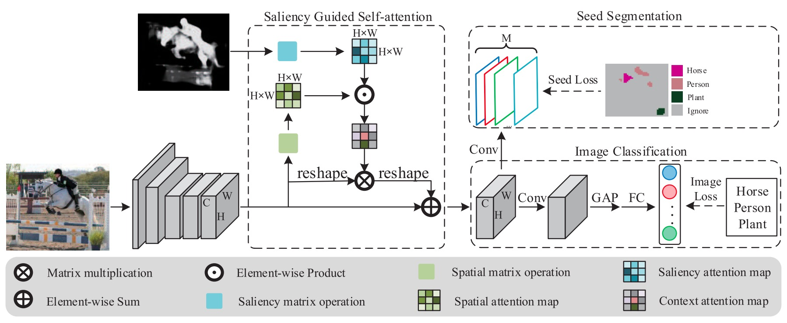
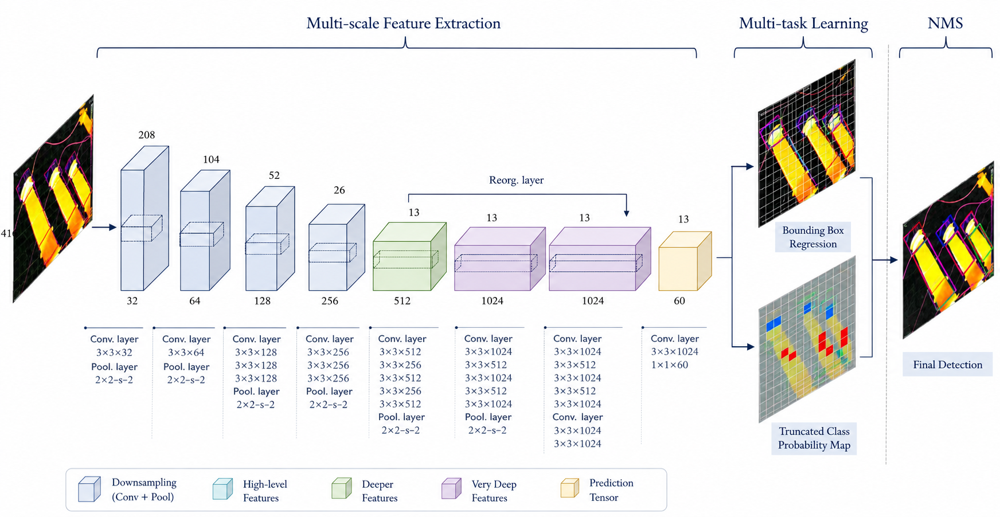
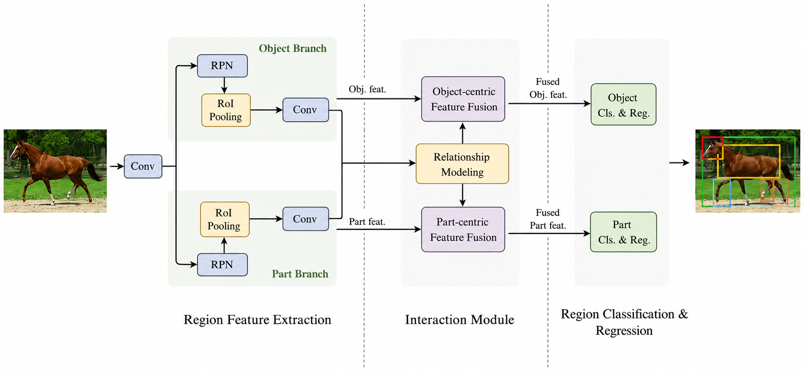

Qi Yao
I am an Algorithm Expert at Alibaba Group. I received my B.S. and M.S. degrees from the Machine Vision and Navigation Lab, Zhejiang University, advised by Associate Professor Xiaojin Gong and Professor Zhiyu Xiang. My research interests lie in Vision-Language Models (VLMs) and Agentic Reinforcement Learning.
Selected Publications
Google Scholar →-

-

-

-

-

-

Education
M.S. in Information Engineering
Zhejiang University
Sep 2017 – Mar 2020
National Scholarship, Outstanding Graduate
B.S. in Information Science and Electronic Engineering
Zhejiang University
Sep 2013 – Jun 2017
First-Class Scholarship, Outstanding Graduate